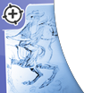
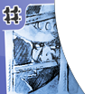
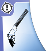

Mustang
Wenn du eine Mustang-Karte ausgespielt hast, "sehen" dich deine Mitspieler in einem um 1 vergrößerten Abstand, sodass sie eine Waffe mit größerer Reichweite benötigen, um dich zu treffen. Für dich selbst ändert sich der Abstand zu den anderen Spielern jedoch nicht!

Fass
Wenn diese Karte im Spiel ist, ziehst du eine Karte, wenn du mit einer

-Karte beschossen wirst: Im "einfachen" Modus ist das automatisch der Fall, ansonsten ziehst du vom Nachziehstapel. Wenn du eine Karte mit einem

-Symbol ziehst, war der Angriff ein [

] – andernfalls fährst du ganz normal fort. Das FASS gewährt dir eine zusätzliche Chance, bevor du auf deine Karten zurückgreifen musst!!! (Spiele diese Karte in die Tischmitte aus.)

Gefängnis
Spiele diese Karte aus, um einen anderen Spieler (außer den Sheriff) ins Gefängnis zu werfen.
Bist du im Gefängnis, musst du jedes Mal eine Karte ziehen, bevor du mit deiner Runde beginnst. Ziehst du eine Karte mit einem
-Symbol, entkommst du aus dem Gefängnis und kannst deine Runde normal fortsetzen. Andernfalls musst du aussetzen.

Dynamit
Lege diese Karte vor dir aus: das Dynamit bleibt dort eine ganze Runde. Am Anfang deiner nächsten Runde (du hast das Dynamit bereits gespielt) musst du eine Karte ziehen: Ziehst du ein

-Symbol, explodiert das Dynamit (du verlierst 3 Lebenspunkte). Andernfalls wandert das Dynamit zum nächsten Spieler weiter.
Fernrohr
Wenn du ein Fernrohr vor dir ausliegen hast, verringert sich der Abstand zu deinen Mitspielern um 1. Dies betrifft alle Karten, bei denen der Abstand eine Rolle spielt, einschließlich deiner Waffen.

Schofield
Diese Waffe vergrößert deine Reichweite auf 2.
Du darfst nur eine Waffe vor dir ausliegen haben. Wenn du eine neue Waffe ausspielst, musst du die alte ablegen.

Remington
Diese Waffe vergrößert deine Reichweite auf 3. Du darfst nur eine Waffe vor dir ausliegen haben. Wenn du eine neue Waffe ausspielst, musst du die alte ablegen.

Rev. Carabine
Diese Waffe vergrößert deine Reichweite auf 4. Du darfst nur eine Waffe vor dir ausliegen haben. Wenn du eine neue Waffe ausspielst, musst du die alte ablegen.

Winchester
Diese Waffe vergrößert deine Reichweite auf 5. Du darfst nur eine Waffe vor dir ausliegen haben. Wenn du eine neue Waffe ausspielst, musst du die alte ablegen.

Volcanic
Hast du diese Karte ausgespielt, kannst du in deiner Runde eine beliebige Anzahl von "BANG!"-Karten ausspielen. Diese "BANG!"-Karten können auf dasselbe Ziel oder auf verschiedene Ziele ausgespielt werden, sind allerdings auf einen Abstand von 1 beschränkt.

Versteck (DODGE CITY)
Wie MUSTANG, aber du kannst beides haben!

Fernglas (DODGE CITY)
Wie FERNROHR, aber du kannst beides haben!